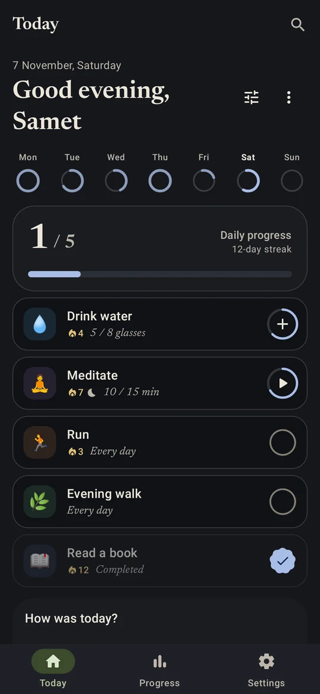
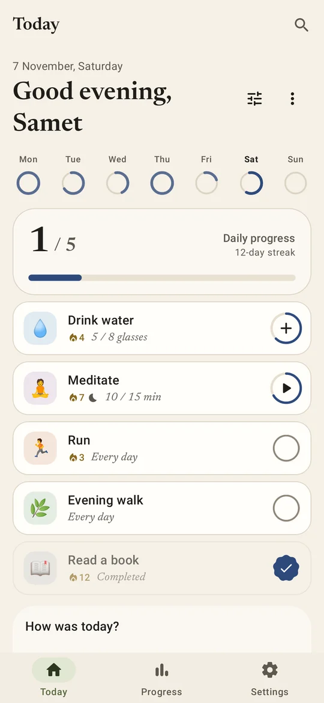
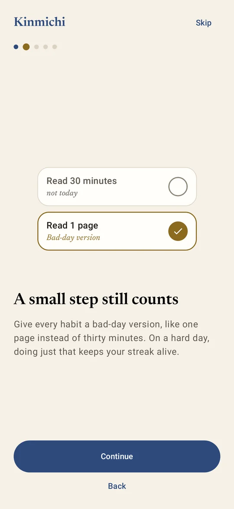
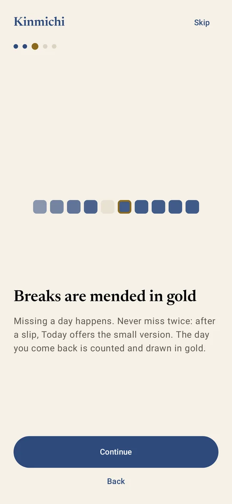
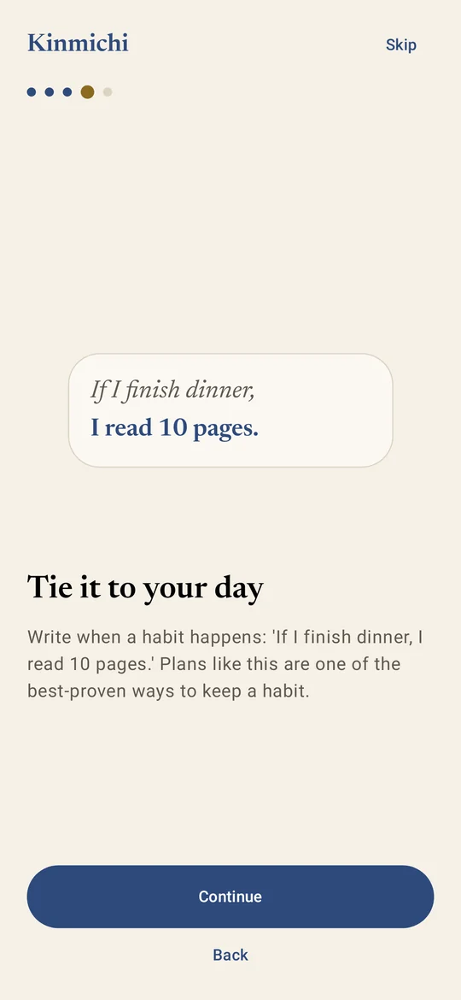
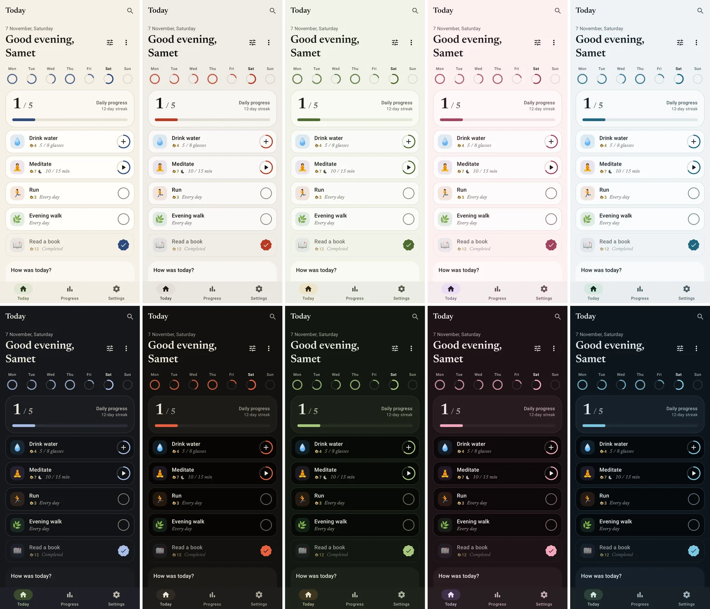
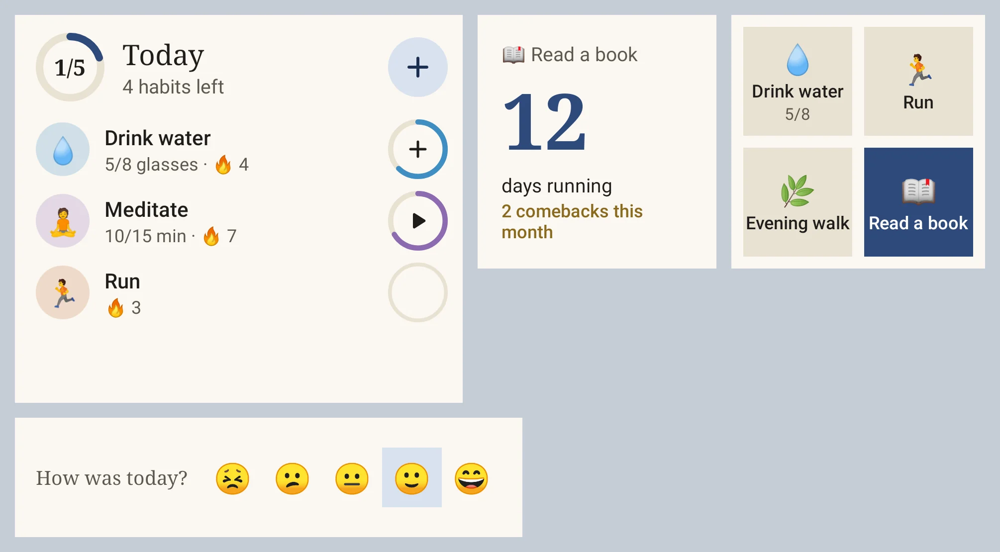

金道 · the golden path
Keep going. Mend the breaks in gold.
A calm habit tracker for Android, built around the day after you slip, not the perfect streak.
Free and open source · No ads · No tracking · Works offline


Built for the day after
Most habit apps punish you when a streak breaks. Kinmichi helps you come back.

A small step still counts
Give every habit a bad-day version, like one page instead of thirty minutes. On a hard day, that keeps the streak alive.

Never miss twice
After a missed day, Today offers the small version in one tap. The day you come back is counted and drawn in gold.

Tie it to your day
Write when a habit happens. If-then plans are one of the best-proven ways to make a habit stick.
Less effort, more days done
The app does the remembering, so you only do the habit.
Health Connect
Link a habit to steps, distance, calories, exercise or sleep, and it fills itself every time you open the app.
Smart reminders
Usually run at 07:40 but the reminder rings at 21:00? Kinmichi notices and suggests a better time.
A quiet streak alert
One evening note, only when a streak of three days or more is about to break. Nothing else.
Goals that adapt
Rarely hitting a target? Start from what you really do. Hitting it every day? Raise the bar. Daily too much? Make it three times a week.
Five palettes, one calm look
Washi, Sumi, Matcha, Sakura and Umi, each with a light and a dark side, or your wallpaper colours. Editorial serif type, and pure black at night if you like it.


On your home screen and wrist
Six widgets: Today, a single habit, this week, your streak, a quick grid of four habits and a one-tap mood. A Wear OS tile and watch app mark habits from your wrist.
Yours, on your phone
Everything lives on the device. Sync with Google only if you want it, and lock the app with a PIN or your fingerprint.
Not now, not later. There is nothing to sell.
No analytics, no third-party SDKs watching you.
MIT licensed. Read every line on GitHub. Privacy details.
Install
Kinmichi is distributed on GitHub, not the Play Store. Obtainium keeps it up to date for you.
- Install Obtainium on your Android phone.
- Add the app with this address:
https://github.com/sametackgz41/kinmichi - Set the APK filter to
^(kinmichi|tsuzuku)-[0-9]so it picks the phone app, then install. Updates arrive automatically.
Prefer doing it by hand? Download the APK from the latest release. The app also tells you when a new version is out.